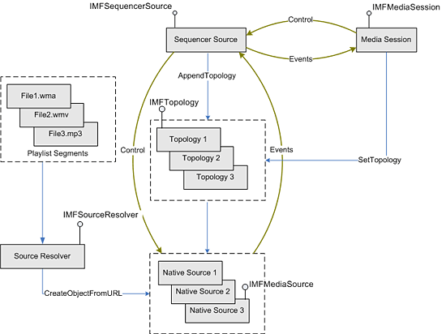

The sequencer source enables an application to play a collection of Media Sources sequentially, with seamless transitions between the sources. The sequencer source can be used for the following scenarios:
For each element of a playlist, the application creates a separate topology. The media sources in these topologies are referred to as native sources, to distinguish them from the sequencer source. During playback, the entire sequence of topologies is called a presentation, and each topology within the sequence is called a segment.
Playback is controlled by the Media Session, which provides transport controls, such as play, pause, and stop. The Media Session also manages the presentation time and sends events to the application. (Events from the sequencer source are forwarded to the application through the Media Session.)
To create a playlist, the application creates one or more playback topologies and queues them on the sequencer source in the desired order of playback. Internally, the sequencer source modifies the topologies so that the source nodes point to the sequencer source instead of the native source. The application sends these modified topologies, rather than the original topologies, to the Media Session. This enables the sequencer source to aggregate the native sources and to communicate with the Media Session.
To achieve seamless transitions between segments, the sequencer source prerolls each segment. While one segment is playing, and before it is time to play the following segment, the sequencer source fires an MENewPresentation event that contains a presentation descriptor. The application uses this presentation descriptor to get the topology for the next segment in the presentation, and queues the topology on the Media Session.
The following illustration shows the data flow for playlist entries through the sequencer source. The application uses the source resolver to create the native sources, builds topologies for each segment, and queues the topologies on the sequencer source.

Â
Â